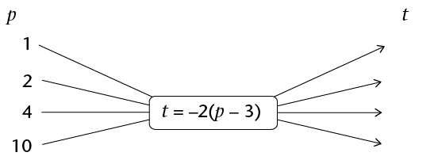

Hersiening en assessering
Hersiening
Wys al die stappe van jou werk.
Telgetalle
-
- Skryf beide 300 en 160 as produkte van priemfaktore.
- Bepaal die GGD en KGV van 300 en 160.
- Skryf beide 300 en 160 as produkte van priemfaktore.
- Tommy, Thami en Timmy kry by hulle ouma geld vir hulle verjaarsdae in die
verhouding van hulle ouderdomme. Hulle word onderskeidelik 11, 13 en 16 jaar oud.
As die totale bedrag wat vir al drie seuns gegee word R1 000 is, hoeveel geld kry Thami
op sy verjaarsdag?
- Tshepo en sy gesin ry vir ’n vakansie see toe. Die afstand is 1 200 km en hulle moet
hulle bestemming binne 12 ure bereik. Na 5 ure het hulle 575 km gery en toe bars een
van die motor se bande. Dit neem 45 minute om die noodwiel aan te sit voor hulle
verder kan ry. Teen watter gemiddelde spoed moet hulle die res van die reis aflê om
hulle bestemming betyds te bereik?
- Die getal onderwysers by ’n skool het in die verhouding 5 : 6 vermeerder. As daar
eers 25 onderwysers by die skool was, hoeveel onderwysers is daar nou?
- ABC vir Altyd se jaarlikse state moet geouditeer word. Oudits Ing. kwoteer hulle
R8 500 + 14% BTW. Hoeveel sal ABC vir Altyd in totaal aan Oudits Ing. moet betaal?
- Reshmi belê R35 000 vir drie jaar teen ’n rentekoers van 8,2% per jaar. Bereken
hoeveel geld daar aan die einde van die beleggingstermyn in haar rekening sal wees.
- Lesebo wil ’n sitkamerstel koop wat R7 999 kontant kos. Hy het nie genoeg geld nie
en besluit om dit op huurkoop te koop. Die winkel vereis ’n 15% deposito wat dadelik
betaal moet word en 18 maandelikse paaiemente van R445.
- Bereken die deposito wat Lesebo moet betaal.
- Hoeveel ekstra betaal Lesebo omdat hy die sitkamerstel op huurkoop in plaas
van kontant koop?
- Bereken die deposito wat Lesebo moet betaal.
- Kyk na die volgende wisselkoerstabel:
Suid-Afrikaanse Rand
1.00 ZAR
inv. 1.00 ZAR
Euro
0.075370
13.267807
US Dollar
0.098243
10.178807
Britse pond
0.064602
15.479409
Indiese roepee
5.558584
0.179902
Australiese dollar
0.102281
9.776984
Kanadese dollar
0.101583
9.844200
Emiratiese dirham
0.360838
2.771327
Switserse frank
0.093651
10.677960
Chinese renminbi yuan
0.603065
1.658195
Maleisiese ringgit
0.303523
3.294646
- Skryf die bedrag in rand neer wat verwissel moet word om 1 Switserse frank te
kry. Gee jou antwoord tot die naaste sent.
- Skryf die enigste geldeenheid neer waarvan jy meer as 100 eenhede sal kry as jy
R100 daarvoor omruil.
- Ntsako gaan Dubai toe en ruil R10 000 om vir Emiratiese dirhams. Hoeveel
dirhams ontvang Ntsako? (Neem aan dat daar geen kommissie is nie.)
- Skryf die bedrag in rand neer wat verwissel moet word om 1 Switserse frank te
kry. Gee jou antwoord tot die naaste sent.
Heelgetalle
Moenie ’n sakrekenaar vir enige van die vrae in hierdie afdeling gebruik nie.
- Skryf ’n getal in elke blokkie om die berekeninge korrek te maak.
-
☐ + ☐ = -11
-
☐ - ☐ = -11
-
- Vul <, > of = in die blokkie in om die verwantskappe aan te dui.
- -23 ☐ 20
- -345 ☐ -350
- \(4 - 3\) ☐ \(3 - 4\)
- \(5 - 7\) ☐ \(-(7 - 5)\)
- \(-9 \times 2\) ☐ \(-9 \times -2\)
- \( -4 \times 5\) ☐ \(4 \times -5\)
- \( -10 \div 5 ☐ -10 \div -2 \)
- \(-15 \times -15\) ☐ 224
- Volg die patroon om die getallerye te voltooi.
- 8; 5; 2; ☐
- 2; -4; 8; ☐
- -289; -293; -297; ☐
- Kyk na die getallelyne. Albei ontbrekende getalle is halfpad tussen die ander twee
getalle. Vul die korrekte waardes in die blokkies in.
-
- Bereken die volgende:
- \( -5 - 7\)
- \( 7 - 10\)
- \( 8-(-9)\)
- \( (-5)(-2)(-4)\)
- \( 5 + 4 \times 2\)
- \( \frac{(\sqrt{4})(-2)^2}{-4}\)
- \( \frac{-(-3)^3\sqrt[3]{125}}{(-9)(3)}\)
- \( \frac{\sqrt[3]{-64}}{-3-1}\)
- \( -5 - 7\)
-
- Skryf twee getalle neer wat -15 as antwoord gee wanneer hulle met mekaar
vermenigvuldig word. (Een van die getalle moet positief wees en die ander een
negatief.)
- Skryf twee getalle neer wat 15 as antwoord gee wanneer hulle bymekaargetel
word. Een van die getalle moet positief wees en die ander een negatief.
- Skryf twee getalle neer wat -15 as antwoord gee wanneer hulle met mekaar
vermenigvuldig word. (Een van die getalle moet positief wees en die ander een
negatief.)
- Om 5 vm. was die temperatuur in Kimberley -3 °C. Om 1 nm. was dit 17 °C. Met
hoeveel grade het die temperatuur gestyg?
- ’n Duikboot is 220 m onder die see se oppervlak. Dit beweeg 75 m boontoe. Hoe ver
onder die oppervlak is dit nou?

Eksponente
Jy mag nie ’n sakrekenaar gebruik vir enige van die vrae in hierdie afdeling nie.
- Skryf die waarde van die volgende neer:
- \((-3)^2\)
- \(-5^2\)
- \( (-1)^{200}\)
- \( (10^2)^2\)
- \((-3)^2\)
- Skryf die volgende getalle in wetenskaplike notasie:
- 200 000
- 12,345
- 200 000
- Skryf die volgende getalle in gewone notasie:
- \(1,3 \times 10^2 \)
- \(7.01 \times 10^7 \)
- \(1,3 \times 10^2 \)
- Watter getal is die grootste: \(5,23 \times 10^{10}\) of \(2 ,9 \times 10^{11}\)?
- Vereenvoudig die volgende:
- \(2^7 \times 2^3\)
- \(2x^3 \times 4x^4\)
- \((-8y^6) \div (4y^3)\)
- \((3x^8)^3\)
- \( (2x^5)(0.5x^{-5})\)
- \( (-3a^2b^3c)(-4abc^2)^2\)
- \( \frac{(2xy^2z^3)(-5y^2z)^2}{20xy^8z^4} \)
- \(2^7 \times 2^3\)
- Skryf die waardes van elk van die volgende neer:
- \((0,6)^2\)
- \((0,2)^3\)
- \((\frac{1}{2})^2\)
- \(\sqrt{\frac{1}{4}}\)
- \(4\sqrt{\frac{9}{64}}\)
- \(\sqrt[3]{0.001}\)
- \((0,6)^2\)
Numeriese en meetkundige patrone
- Skryf vir elk van die volgende rye die reël vir die verband tussen opeenvolgende terme
in woorde neer. Gebruik dan die reël om die volgende drie terme in die ry te bepaal.
- \(12; 7; 2;\text{______};\text{______};\text{______}\)
- \( -2; -6; -18;\text{______};\text{______};\text{______}\)
- \(100; -50; 25;\text{______};\text{______};\text{______}\)
- \(3; 4; 7; 11;\text{______};\text{______};\text{______}\)
- \(12; 7; 2;\text{______};\text{______};\text{______}\)
- In hierdie vraag word die reël waarmee elke term in die ry bepaal kan word vir jou
gegee. In al die gevalle is \(n\) die posisie van die term.
Bepaal die eerste drie terme in elke ry. (Wenk: Neem \(n = 1\) Bepaal die eerste drie terme in elke ry.
- \(n \times 4\)
- \(n\times 5 - 12\)
- \(2 \times n^2\)
- \(3n \div 3 \times -2\)
- \(n \times 4\)
- Skryf die reël neer waarmee elke term in die ry bepaal kan word (in ’n soortgelyke
formaat as dié wat in vraag 2 gegee is, waar n die posisie van die term is).
- \(2; 4; 6; ...\)
- \(-7; -3; 1; ...\)
- \(2; 4; 8; ...\)
- \( 9; 16; 23; ...\)
- \(2; 4; 6; ...\)
- Gebruik die reëls wat jy in vraag 3 bepaal het om die waarde van die 20ste term van
die rye in vraag 3(a) en 3(b) te bepaal.
-
- Bepaal die verband tussen die posisie van die term in die ry en die waarde van die
term, en gebruik dit om die ontbrekende waardes in die tabelle in te vul.
-
Posisie in ry
1
2
3
4
25
Waarde van die term
-8
-11
-14
-
Posisie in ry
1
2
3
Waarde van die term
1
3
9
243
19 683
-
- Die diagram wys ’n reeks figure in ’n patroon wat met vuurhoutjies gemaak is.

- Skryf die reël wat die getal vuurhoutjies beskryf wat vir elke nuwe figuur benodig
word, in woorde neer.
- Gebruik die reël om die ontbrekende waardes in die tabel hier onder te bepaal,
en vul hulle in.
Nommer van die figuur
1
2
3
4
20
Getal vuurhoutjies benodig
4
7
151
- Skryf die reël wat die getal vuurhoutjies beskryf wat vir elke nuwe figuur benodig
word, in woorde neer.
Funksies en verbande
- Vul die ontbrekende invoerwaardes, uitvoerwaardes of reël in hierdie vloeidiagramme
in. Let op dat p (die invoerwaardes) en t (die uitvoerwaardes) heelgetalle is.
-

-

-

-
- Kyk na die waardes in die volgende tabel. Die reël om y te bepaal is: deel x deur -2 en
trek 4 af. Gebruik die reël om die ontbrekende waardes in die tabel te bepaal en vul
hulle in.
x
-2
0
2
5
y
-1
-3
-4
48
- Kyk na die waardes in die volgende tabel:
\(x\)
-2
-1
0
1
2
4
15
\(y\)
1
3
5
7
9
61
- Skryf die reël om die y-waardes in die tabel te bepaal in woorde neer.
- Gebruik die reël om die ontbrekende waardes in die tabel te bepaal en vul
hulle in.
- Skryf die reël om die y-waardes in die tabel te bepaal in woorde neer.
Algebraïese uitdrukkings
- Kyk na hierdie algebraïese uitdrukking: \(5x^3 - 9 + 4x - 3x^2\).
- Hoeveel terme het hierdie uitdrukking?
- Wat is die veranderlike in hierdie uitdrukking?
- Wat is die koëffisiënt van die \(x^2\)
term?
- Wat is die konstante in hierdie uitdrukking?
- Skryf die uitdrukking oor sodat die terme in volgorde van dalende magte van \(x\).
- Hoeveel terme het hierdie uitdrukking?
- In hierdie vraag is \(x=6\) en \(y = 17\). Voltooi die reëls om die verskillende maniere te wys
om y te bepaal as x bekend is. Die eerste manier is vir jou gedoen:
Manier 1: Vermenigvuldig x met 2 en tel 5 by.Dit kan geskryf word as \(y = 2x + 5\)
- Manier 2: Vermenigvuldig \(x\) met ______ en trek dan ______. af. Dit kan geskryf word as
- Manier 3: Deel \(x\) met ______ en tel dan ______ by. Dit kan geskryf word as
- Manier 4: Tel ______ by \(x\), en vermenigvuldig dan met ______ . Dit kan geskryf word as
- Manier 2: Vermenigvuldig \(x\) met ______ en trek dan ______. af. Dit kan geskryf word as
- Vereenvoudig:
- \(2x^2 + 3x^2\)
- \(9xy -12xy\)
- \(3y^2 - 4y + 3y - 2y^2\)
- \(9m^3 + 9m^2 + 9m^3 - 3\)
- \(2x^2 + 3x^2\)
- Bereken die waarde van die volgende uitdrukkings as \(a = -2; b = 3; c = -1 \text{ en } d = 0:\)
- \(abc\)
- \(-a^2\)
-
\((abc)^d\)
- \(a + b- 2c\)
- \((a + b)^{10}\)
- \(abc\)
Algebraïese vergelykings
- Skryf vergelykings wat die gegewe inligting voorstel:
- Nandi is \(x\) jaar oud. Shaba, wat
\(y\) jaar oud, is drie jaar ouer as Nandi.
- Die temperatuur in Colesberg was deur die dag \(x\)°C. In die nag het die
temperatuur met 15 grade tot -2°C gedaal.
- Nandi is \(x\) jaar oud. Shaba, wat
\(y\) jaar oud, is drie jaar ouer as Nandi.
- Los die volgende vergelykings op vir \(x\):
- \(x + 5 = 2\)
- \(7 - x = 9\)
- \(3x - 1 = -10\)
- \(2x^3 = -16\)
- \( 2^x = 16\)
- \( 2(3)^x = 6\)
- \(x + 5 = 2\)
- As \(3n - 1 = 11\), wat is die waarde van \(4n\)?
- As \(c = a + b\) en \(a + b + c = 16\) , wat is die value van
\(c\).
-
- As \(2a + 3 = b\), skryf waardes vir \(a\) en \(a\) neer wat die vergelyking waar sal maak.
- Skryf een ander paar waardes neer om die vergelyking waar te maak.
- As \(2a + 3 = b\), skryf waardes vir \(a\) en \(a\) neer wat die vergelyking waar sal maak.